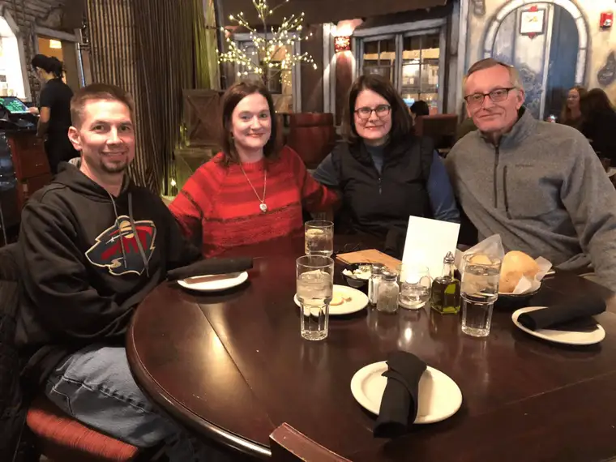

The cardiac surgeon at St. Mary’s Hospital in Rochester said most of his surgeries are re-surgeries. It’s the nature of what they do there – reworking problematic cases – and my husband’s definitely fit the bill.
Learning his heart was literally broken, as we did in the fall of 2017, nearly broke us. The words “open-heart surgery” were startling, especially applied to one who’d been visibly healthy and symptomless.
Seeing him intubated with tubes and so helpless post-surgery brought me to my knees. And though we were deeply grateful to be in the recovery phase at all, it was exceedingly slow, and often confusing. The deeper questions of what all this might mean in God’s eyes are still being discovered and answered.
A year later, we celebrated being past it all, when suddenly, we found ourselves facing the shocking news, discovered in an annual checkup: the murmur that had set this whole thing in motion was back. But this couldn’t be right, right?
The next four months would bring rising levels of anxiety as we sorted through it all, including a new development of hemolytic anemia. What was going on inside the body of my relatively young and fit husband? We walked through December to April with so many unanswered questions.
But somewhere midway, something began to happen we can only understand as God’s hand and an answer to prayer. When it seemed clear the best place to solve the mystery would be at Mayo Clinic, where medical conundrums are a particular interest and passion, we updated our Caringbridge story, and within hours – in the middle of a sleepless night – read a startling and unexpected email: “We are in Rochester waiting for you. Our house is your home during your stay.”
I call them the “Mayo Angels,” for they were the glimmer of light for which we longed, a haven in the middle of a confusing storm that had shaken us to the core.
Almost daily, the gentle words would arrive from the east, assuring us that all was in place for our arrival, pre-guiding us through our future course. And when the day came to travel that long road to Rochester for tests, even before we’d spotted their home, they’d spotted us, and showed us to the cozy resting spot they’d readied as a refuge.
Over the next several days, these former Fargoans showed us the love of God in countless ways. They were Christ-in-the-flesh, not only listening to but feeling our suffering with us.

A second open-heart surgery has been set, and once again, they’ll be our sanctuary. Someday, I’ll share more about these dear souls who tossed us a lifeline at a crucial moment. For now, I offer this: Prayers do not fall on deaf ears but in the hearts of those who love God.
“There is no greater love, says the Lord, than to lay down one’s life for a friend.” (John 15:13)
[For the sake of having a repository for my newspaper columns and articles, I reprint them here, with permission, a week after their run date. The preceding ran in The Forum newspaper on April 20, 2019.]